visión por computador · sjk002 · lab 3
Lab 3 · Fourier
fft2, fftshift, teorema de la convolución y filtros diseñados en frecuencia, a nivel de código.
bloque A · 7 diapositivas
El módulo numpy.fft
fft2, ifft2, fftshift e ifftshift; complejos; magnitud, fase y reconstrucción con einstein.
bloque A · el módulo numpy.fft
fft2 e ifft2
| a | imagen (M×N), real o compleja |
| retorno | complejos, misma forma M×N |
| F[0, 0] | componente DC = suma de todos los píxeles |
| trampa | la frecuencia 0 está en la esquina superior izquierda, no en el centro |
| F | espectro con la frecuencia 0 en [0, 0] |
| retorno | complejos; si a era real, la parte imaginaria es ≈ 1e-13 |
| regla | ifft2(fft2(a)) devuelve a, salvo redondeo |
| trampa | si F estaba centrada hay que deshacer el desplazamiento antes |
[0, 0] y que devuelve números complejos.|F|.max() = 19 285 918 = im.sum() exactamente (np.isclose da True).bloque A · el módulo numpy.fft
fftshift · ifftshift
| efecto | lleva la DC de [0, 0] al centro (índice N//2) |
| uso | solo para visualizar o diseñar filtros centrados |
| equivale a | np.roll(F, N//2) en cada eje |
| efecto | deshace fftshift: la DC vuelve a [0, 0] |
| equivale a | np.roll(F, -(N//2)) en cada eje |
| cuándo | antes de ifft2, o al preparar un filtro centrado |
1 ↔ 4 y 2 ↔ 3: intercambio en diagonal. La DC (esquina del cuadrante 1) acaba en el centro.
bloque A · tamaño impar
¿Por qué ifftshift?
a = np.arange(5)fftshift(a)ifftshift(fftshift(a))fftshift(fftshift(a))Con N par (np.arange(4)): fftshift = [2 3 0 1] y aplicarlo dos veces sí devuelve [0 1 2 3].
| N | fftshift | ifftshift |
|---|---|---|
| par | roll +N/2 | roll −N/2 (idéntico) |
| impar | roll +N//2 | roll −N//2 (distinto) |
fftshift dos veces no deshace nada. Usa siempre ifftshift para deshacer.bloque A · p3.py
FT e IFT del profesor
def FT(im):
# DC al centro
return fft.fftshift(fft.fft2(im))
def IFT(ft):
# deshace el shift ANTES de la inversa
return fft.ifft2(fft.ifftshift(ft))
bloque A · lección 004, diapositiva 3
Complejos en NumPy
| expresión | qué da |
|---|---|
np.abs(z) / np.absolute | módulo \(\sqrt{a^2+b^2}\) |
np.angle(z) | fase \(\arctan(b/a)\) en \((-\pi,\pi]\) |
np.real(z), np.imag(z) | partes real e imaginaria |
complex(a, b) o a + b*1j | construye \(a+bj\) |
np.conj(z) | conjugado \(a-bj\) |
1j, no j. Y np.abs de un complejo es el módulo, no «quitar el signo».F = np.abs(F) * np.exp(1j * np.angle(F)) devuelve F: módulo y fase lo contienen todo.bloque A · testFT
¿abs o real al invertir?
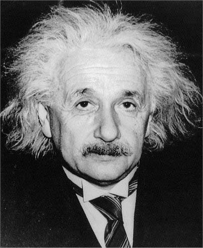
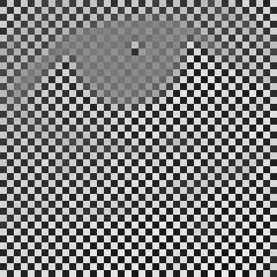
np.abs sale la imagen perfecta (error 2.6e-13); con np.real sale un tablero de signos alternos entre −233 y 234.np.real, no np.abs.bloque A · magnitud, fase y reconstrucción
testFT con Einstein
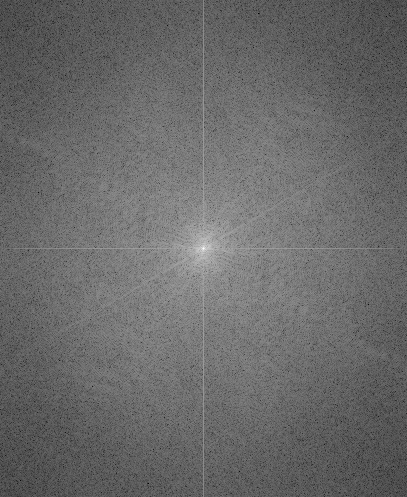
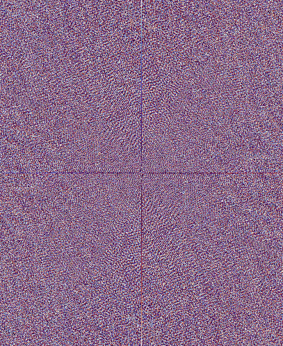
mag = np.log1p(np.abs(F)) fase = np.angle(F) rec = np.real(IFT(F))
Error de reconstrucción: 3.1e-13. Parte imaginaria máxima: 1.2e-13.
np.log(np.abs(ft)), que da −inf si algún |F| = 0: mejor np.log1p.bloque B · 7 diapositivas
Teorema en código
averageFilterFrequency, testConvTheo y los tiempos reales que contestan la V/F del examen.
bloque B · enunciado y demostración
Teorema de la convolución
- \(\odot\): producto elemento a elemento, no matricial.
- I y M deben tener la misma forma: la máscara se rellena de ceros.
- La convolución resultante es circular.
bloque B · línea a línea
averageFilterFrequency
def averageFilterFrequency(im, filterSize):
filterMask = avgFilter(filterSize) # 1
filterBig = np.zeros_like(im, dtype=float) # 2
# pegar la máscara en el centro # 3
w, h = filterMask.shape
W, H = filterBig.shape
filterBig[int(W/2-w/2):int(W/2+w/2),
int(H/2-h/2):int(H/2+h/2)] = filterMask
filterBig = fft.ifftshift(filterBig) # 4
return np.absolute(IFT(FT(im) * FT(filterBig))) # 5
zeros_like daría enteros y 1/49 se guardaría como 0.bloque B · diagrama
Máscara: pequeña a grande
1 · máscara 3×3 (1/9)
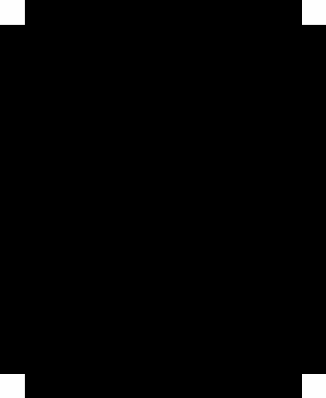
bloque B · propiedad de traslación
¿Por qué el centro a (0, 0)?
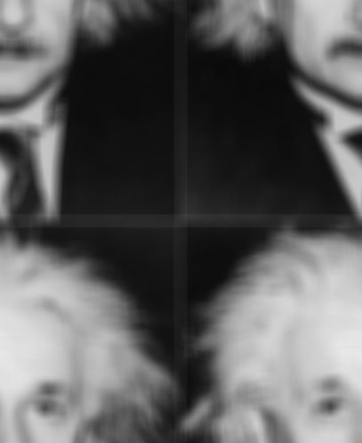
Una máscara centrada equivale a una delta en \(x_0=(M/2,N/2)\): la convolución traslada la imagen ese vector, de forma circular.
bloque B · RMS con margen de 5 píxeles
testConvTheo
RMS real (espacial con reflect frente a FFT) en einstein: cae a ≈10⁻¹³ justo cuando el margen alcanza el radio de la máscara.
| media 7×7 | valor |
|---|---|
| fórmula del profesor, margen 5 | 6,0e−17 · coinciden |
| RMS real, margen 5 | 4,9e−14 · coinciden |
| RMS, toda la imagen (reflect) | 1,19 · bordes distintos |
| RMS, toda la imagen (wrap) | 4,8e−14 · idénticas |
convolve usa reflect y la FFT es circular: los bordes difieren. El margen debe ser ≥ radio de la máscara: con 15×15 un margen de 5 no basta.bloque B · medición real (media y desviación)
E3 · tiempos
Imagen 512×512, máscara m×m variable
Máscara 7×7, imagen N×N variable
Izquierda: la FFT cuesta ≈ 12–14 ms sin depender de m; la directa crece con \(m^2\) y la supera desde m ≈ 9. Derecha: con 7×7 gana la directa. Desviación típica ≤ 2,1 ms.
bloque B · «offers the possibility of speeding up»
La V/F del examen
VERDADERO
«The convolution theorem offers the possibility of speeding up image filtering» — pero con matices:
- Núcleos grandes: coste de la FFT casi constante (m = 31: 19× más rápida).
- Filtros lineales e invariantes solamente.
- La convolución es circular: bordes distintos.
| caso (512×512) | espacial | frecuencia |
|---|---|---|
| m = 3 | 1,7 ms | 13,9 ms |
| m = 11 | 23,4 ms | 13,7 ms |
| m = 31 | 228,4 ms | 11,9 ms |
| 7×7, N = 2048 | 127,6 ms | 348,1 ms |
bloque C · 9 diapositivas
Filtros en frecuencia
Diseñados en el espectro con meshgrid: ideal, Butterworth y gaussiano; por qué aparece el ringing.
bloque C · línea a línea
bandPassFilter
def bandPassFilter(shape, r=None, R=None):
n, m = shape
m2, n2 = np.floor(m / 2.0), np.floor(n / 2.0)
[vx, vy] = np.meshgrid(np.arange(-m2, m2 + 1),
np.arange(-n2, n2 + 1))
distToCenter = np.sqrt(vx**2.0 + vy**2.0)
if R is None: # paso bajo
filter = distToCenter < r
elif r is None: # paso alto
filter = distToCenter > R
else: # paso banda
filter = np.logical_and(distToCenter < R,
distToCenter > r)
return filter.astype('float')
distancia al centro (la DC)
logical_and; el paso alto es el complemento del bajo.bloque C · ficha y trampa
meshgrid y tamaño impar
| x | valores a lo largo de las columnas |
| y | valores a lo largo de las filas |
| X | cada fila es x: varía por columnas |
| Y | cada columna es y: varía por filas |
| forma | (len(y), len(x)) |
np.meshgrid([0,1,2],[0,1]) # X = [[0 1 2],[0 1 2]] Y = [[0 0 0],[1 1 1]]
np.arange(-m2, m2+1) da m elementos solo si m es impar. Con 256×256 da 257 y el producto con fft2(im) falla (255×255 sí funciona).# vale con N par e impar
def distToCenter(shape):
vy, vx = np.indices(shape)
return np.hypot(vx - shape[1]//2,
vy - shape[0]//2)
El centro en N//2 coincide con la DC que deja fftshift, tanto con N par como impar.
bloque C · desplazar el filtro, no la imagen
testBandPassFilter
# (a) del profesor: se desplaza el FILTRO H = bandPassFilter(im.shape, r, R) # centrado H = fft.ifftshift(H) # DC a (0,0) out = np.absolute(fft.ifft2(H * fft.fft2(im))) # (b) equivalente: se desplaza la IMAGEN out = np.real(IFT(FT(im) * H_centrado))
Comprobado con matrices aleatorias: np.allclose(a, b) es True.
Las dos formas son la misma operación: fftshift es solo una reordenación de índices, y reordenar los dos factores igual da el mismo producto elemento a elemento.
np.absolute: con paso bajo ideal la salida tiene valores negativos (mín −8,9 con r = 20), que el módulo pliega. Usa np.real.bloque C · resultados reales y ringing
Paso bajo: r = 5, 20, 50

bloque C · figura 1 del enunciado
Paso alto y banda
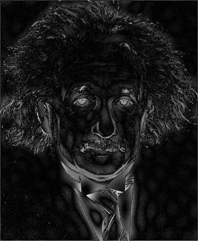
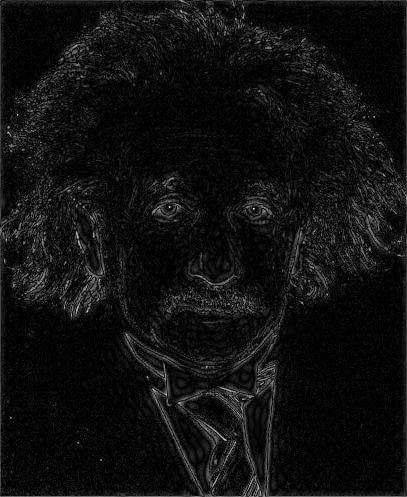
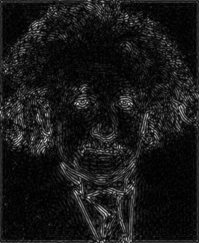
bloque C · Butterworth y gaussiano
E7 · filtros suavizados
def butterLP(shape, c, n=2):
D = dist_centro(shape)
return 1 / (1 + (D / c)**(2 * n))
def smoothBandPass(shape, r=None, R=None, n=2):
if R is None: return butterLP(shape, r, n)
if r is None: return 1 - butterLP(shape, R, n)
return (butterLP(shape, R, n) *
(1 - butterLP(shape, r, n)))
bloque C · mismo D₀ = 20
Ideal frente a suave
Los filtros suavizados no producen valores negativos apreciables ni ondas: desaparece el ringing.
bloque C · fila 371 de einstein, columnas 110–328
Perfil de una fila
El ideal oscila junto a cada borde y baja de 0 (mín −8,9 en la columna 136: la línea roja es el cero).
El gaussiano suaviza igual pero sin ondas: sigue al original de forma monótona.
bloque C · caja en frecuencia = sinc en el espacio
Por qué aparece el ringing
Una caja en frecuencia es una sinc en el espacio, con lóbulos negativos: al convolucionar, cada borde genera ondas.
| filtro | mín / máx de h (2D) |
|---|---|
| ideal | −13,7 % |
| Butterworth | −1,4 % |
| gaussiano | ≈ 0 % |
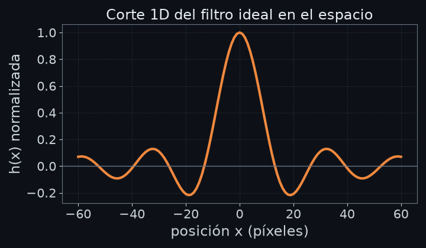
bloque D · 12 diapositivas
Ejercicios resueltos
E1, E2, E4, E5, E6 y E8 del enunciado con resultados reales, y el experimento de magnitud frente a fase.
bloque D · ejercicios resueltos
E1 · mínimo, máximo, gráficos
F = FT(im)
mag, fase = np.abs(F), np.angle(F)
print(mag.min(), mag.max())
print(np.isclose(mag.max(), im.sum()))
plt.boxplot(mag.ravel()); plt.yscale('log')
plt.hist(fase.ravel(), bins=64)
| resultado real | valor |
|---|---|
| mín |F| | 4,92 |
| máx |F| = Σ píxeles | 19 285 918 · True |
| cuartiles | 1367 · 2870 · 6546 |
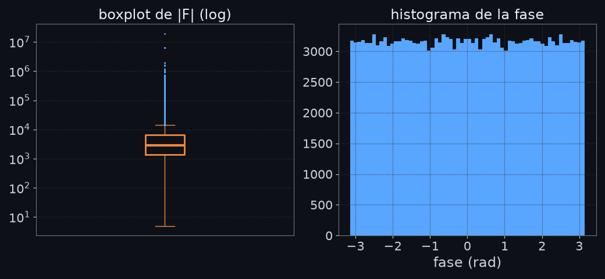
bloque D · teorema con otro filtro
E2 · gaussiano en frecuencia
def gaussFilter(sigma):
k = int(np.ceil(3 * sigma)) # radio 3σ
x = np.arange(-k, k + 1)
g = np.exp(-x**2 / (2 * sigma**2))
m = np.outer(g, g) # separable
return m / m.sum() # suma 1
M = gaussFilter(2)
big = pad_center(M, im.shape) # al centro
FM = FT(fft.ifftshift(big)) # FT del filtro
out = np.real(IFT(FT(im) * FM))
| σ | RMS frente a convolve(wrap) |
|---|---|
| 1 | 5,4e−14 |
| 2 | 6,3e−14 |
| 4 | 1,0e−13 |
La FT de un gaussiano es otro gaussiano; cuanto más ancho en el espacio (σ grande), más estrecho en frecuencia. Con suma 1, F(M)(0, 0) = 1.
bloque D · tamaño frente a frecuencia
FT de gaussiano y de media
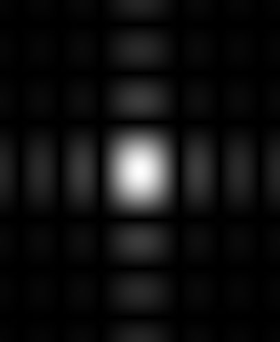
|FT| del núcleo rellenado al tamaño de einstein (497×407), con la DC en el centro.
bloque D · corte por la DC, frecuencia f = u/N
Perfil 1D de las FT
La caja tiene su primer cero en \(f=1/n\) (\(u=N/n\)) y luego lóbulos: deja pasar altas frecuencias. El gaussiano cae sin rebotes.
bloque D · sin bucles
E4 · my_mask(n)
def my_mask(n):
i, j = np.indices((n, n))
# i - j: >0 abajo, 0 diagonal, <0 arriba
return np.sign(i - j)
# alternativas equivalentes
np.tri(n, k=-1) - np.tri(n, k=-1).T
r = np.arange(n)
np.sign(np.subtract.outer(r, r))
bloque D · fichas
np.tri, tril, triu, sign
| retorno | matriz N×M con unos en y bajo la diagonal k |
| k = −1 | solo estrictamente por debajo |
| tipo | float por defecto |
| tril | pone a 0 lo que hay sobre la diagonal k |
| triu | pone a 0 lo que hay bajo la diagonal k |
| uso | np.tril(m, -1) = parte estrictamente inferior |
| retorno | −1, 0 o 1 según el signo de cada elemento |
| uso | np.sign(i - j) da el patrón de E4 |
np.tri(3, k=-1) # [[0 0 0], [1 0 0], [1 1 0]] np.triu(np.ones((3, 3)), 1) # [[0 1 1], [0 0 1], [0 0 0]]
np.indices, np.tri o broadcasting.bloque D · reutilizar el teorema
E4 · my_filter(im, n)
def my_filter(im, n):
mask = my_mask(n) # n×n
big = pad_center(mask, im.shape) # centro
FM = FT(fft.ifftshift(big)) # FT núcleo
# np.real, no abs: hay signo
return np.real(IFT(FT(im) * FM))
RMS frente a
convolve(wrap): 1,7e−13.np.absolute la destruiría; hay que usar np.real.bloque D · dos líneas de demostración
E5 · linealidad de la FT
for lam in np.linspace(0, 1, 5):
mix = np.real(IFT(lam*F1 + (1-lam)*F2))
print(np.allclose(mix, lam*I1 + (1-lam)*I2))
# True True True True True
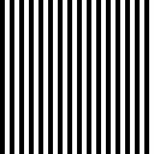
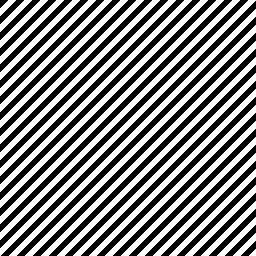
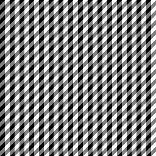
Rayas binarias sintéticas equivalentes (stp1.gif y stp2.gif no están incluidas).
bloque D · no: producto ⇒ convolución
E6 · ¿F(I₁I₂) = F(I₁)F(I₂)?
Dualidad del teorema: producto en el espacio ⇒ convolución circular en frecuencia, con el factor 1/(MN).
def circconv(A, B):
return fft.ifft2(fft.fft2(A) * fft.fft2(B))
F1, F2 = fft.fft2(I1), fft.fft2(I2)
lhs = fft.fft2(I1 * I2)
np.allclose(lhs, F1 * F2) # False
np.allclose(lhs, circconv(F1, F2) / I1.size) # True
bloque D · positions.p y pickle
E8 · marca de agua: método
| f | ruta a positions.p |
| 'rb' | lectura binaria: pickle exige bytes |
| retorno | lista de 30 posiciones (fila, columna) de la FT |
E = load('einstein.pgm')
idx = pickle.load(open('positions.p', 'rb'))
r, c = np.array(idx).T # 30 frecuencias
FE = FT(E)
for X in (a, b):
FX = FT(X)
# |ΔF| medio: en las 30 posiciones / en todo F
dPos = np.abs(FX[r, c] - FE[r, c]).mean()
dAll = np.abs(FX - FE).mean()
print(dPos / dAll)
bloque D · ¿a.pgm o b.pgm?
E8 · resultado
| imagen | RMS píxeles | dPos | dAll | ratio |
|---|---|---|---|---|
| a.pgm | 0,705 | 209,1 | 199,9 | 1,05 |
| b.pgm | 0,706 | 8663,7 | 75,2 | 115,2 |
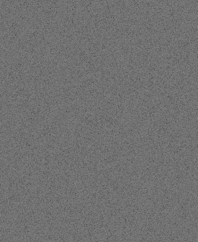
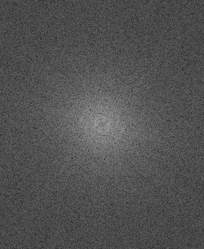
bloque D · experimento real
Magnitud frente a fase
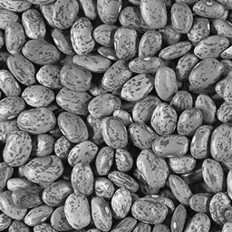
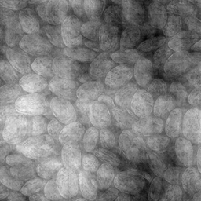
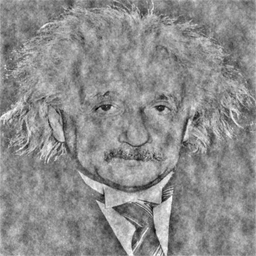
np.abs(Fx) * np.exp(1j*np.angle(Fy)) se parece a y: la fase lleva la estructura; la magnitud solo la textura global.bloque E · 5 diapositivas
Para el examen
Plantillas de código para escribir a mano, dos ejercicios tipo con solución y diez verdadero/falso.
bloque E · plantillas
Chuleta de código
1 · Filtro diseñado en frecuencia (H centrada)
F = fft.fft2(im) # DC en [0,0] H = (D < r).astype(float) # centrada Hs = fft.ifftshift(H) # DC a (0,0) G = F * Hs # elemento a elem. out = np.real(fft.ifft2(G)) # parte real
2 · Teorema con máscara espacial m×m
big = np.zeros(im.shape) # float big[r0:r0+m, c0:c0+m] = mask # al centro big = fft.ifftshift(big) # a (0,0) G = fft.fft2(im) * fft.fft2(big) out = np.real(fft.ifft2(G))
ifftshift y espectro sin centrar, o FT/IFT del profesor con H centrada. Nunca mezclar.np.real al final (no np.abs) y r0 = M//2 − m//2, c0 = N//2 − m//2.bloque E · ejercicios con solución
Examen · lowpass y highpass
def lowpass(im, r):
n, m = im.shape
vy, vx = np.indices(im.shape)
D = np.hypot(vx - m//2, vy - n//2)
H = (D < r).astype(float)
return np.real(fft.ifft2(fft.fft2(im) *
fft.ifftshift(H)))
def highpass(im, r):
# H' = 1 − H ⇒ im − paso bajo
return im - lowpass(im, r)
np.allclose(highpass + lowpass, im) = True.bloque E · np.allclose
Examen · comprobar el teorema
def check_theorem(im, n=7):
esp = convolve(im, np.ones((n, n)) / n**2,
mode='wrap')
big = np.zeros(im.shape)
r0 = im.shape[0]//2 - n//2
c0 = im.shape[1]//2 - n//2
big[r0:r0+n, c0:c0+n] = 1 / n**2
fre = np.real(fft.ifft2(fft.fft2(im) *
fft.fft2(fft.ifftshift(big))))
return np.allclose(esp, fre) # True
reflect por defecto de convolve, np.allclose daría False por los bordes; compara con mode='wrap' o recorta un margen ≥ radio.bloque E · piensa la respuesta antes de que aparezca
Verdadero o falso (1)
fftshift aplicado dos veces deshace el desplazamiento.»FSolo con N par. Con N impar hay que usar ifftshift.np.fft.fft2 deja la componente DC en el centro del array.»FLa deja en [0, 0]; el centro lo pone fftshift.im.sum().np.abs(IFT(F)) se nota si olvidaste el ifftshift.»FEl error es un factor de módulo 1: solo np.real lo delata.bloque E · piensa la respuesta antes de que aparezca
Verdadero o falso (2)
convolve con mode='reflect'.»FEquivale a mode='wrap': la FFT es circular.